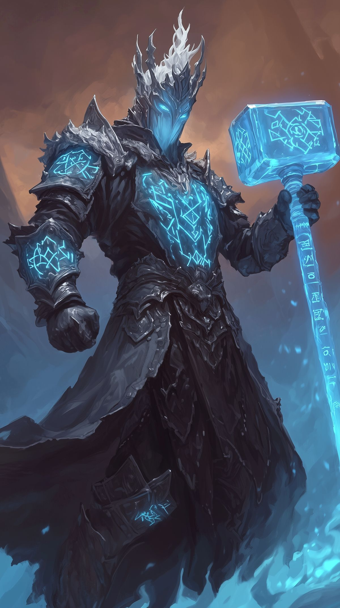

Orv Bezmadan Parlakçekiç

Orv Bezmadan Parlakçekiç, Mountain Grounds'ta dünyaya gelmiş bir cüceydi, ailesindeki tek çocuktu. Babası bir demirci annesi ise Moradin'e ibadet edilen Ataların Tapınağı'nda hizmet eden bir rahibeydi.
Orv Bezmadan daha çocukluğundan itibaren babasının yanında demir dövme, metal işleme ve şekillendirme konusunda eğitim alıyor ve babasının yanında çalışıyordu. Aynı şekilde her cücenin bilmesi gereken Yüce Tanrı Moradin hakkında her şeyi annesi sayesinde öğreniyordu.
Hem dini açıdan hem de kendi ırkının kültürü açısından günden güne gelişiyordu. Belli bir yaşa geldikten sonra kendi isteği ile Ataların Tapınağı'nda eğitim almaya başladı. Annesi ve babası sayesinde hangi konuda uzmanlaşacağını eğitim hayatı başlamadan biliyordu. Eğitimi süresince en iyi olduğu şeyler demir dövme, metal ve mineral şekillendirme ve Moradin'e bağlılığı olmuştu.
Ataların Tapınağında her cüce Moradin'e bağlıydı fakat Orv Bezmadan'ın bağlılığı daha farklı, üst seviyeydi; onun için bunlar bir dersten ziyade aşk ile yapılan şeylerdi. Eğitimini en iyi şekilde tamamladıktan sonra bir Forge Domain Cleric olmuştu, üstlerinin yönetiminde kuzeye doğru bir göreve gönderileceğini öğrenmiş ve ona hazırlık yapmaya başlamıştı.
Üstlerinden duyduğu kadarıyla bu aradıkları şey eski cücelerden kalma bir zırhtı fakat bu zırhın neye benzediği, nasıl bulunacağı bir muammaydı. Bilinen şeyler sadece mitlerden ibaret ya da yaşlıların ağızlarına takılan öykülerinden elde edilen şeylerdi fakat bu mitler ve öykülerin bir ortak yönü vardı: hepsi kuzeyi işaret ediyordu.
Orv Bezmadan görevin kuzeyde olacağını duyunca heyecanla birlikte şaşırmıştı çünkü ismi Common dilde "Soğuk Ocak" olarak çevriliyordu, bu tesadüf olabilir miydi? Babasının adını Soğuk Ocak koymasının sebebi kuzeylilere duyduğu ilgi ve meraktan kaynaklanıyordu çünkü o kadar soğuk bir yerde bile çok iyi demir dövücüleri çıkıyordu.
Orv Bezmadan bunları düşünürken bir yandan da hazırlaması gereken eşyaları hazırlamaya başladı. Yolculuğa çıkmadan önce ailesini görmek için onların yanına gitmişti; ailesi o kadar gururluydu ki tek erkek evlatları çok önemli bir görev için hayatlarının merkezi olarak sayılabilecek bir oluşumdan görev almıştı ve babasının merak duyduğu topraklara doğruydu.
Ailesi ile vedalaştıktan sonra Kuzey'e doğru bir yolculuk başlamıştı, belirli bir süre geçtikten sonra yolculuk tamamlanmış ve Kuzeyde ufak bir kasaba yerleşkesine gelmişlerdi. Bu noktaya gelmelerinin sebebi ise arayacakları şeyin mitlerinde ve öykülerinde bu civarlarda tasvir edilmesiydi.
Kasabaya yerleşmelerine yerli halk karşı çıkmamıştı çünkü kuzeyliler bunları kendi çıkarlarına kullanabilirlerdi; daha fazla insan demek ekonominin düzelmesi ya da çeşitlilik sağlanması demekti. Orv Bezmadan üstlerinin emri ile çevreden birkaç kulübe yapmak için malzeme toplamaya başladı. Her ne kadar yerliler gelmelerinden memnun olsa da kimse evlerini açmamıştı.
Tüm hazırlıklar yapıldıktan sonra artık keşif için kafileler ile ufak yolculuklar başlamıştı. Orv Bezmadan bu yolculuklara çok istekli bir şekilde katılıyordu. Bu araştırma kafileleri bayağı bir süre devam etti; bunlar devam ederken Orv Bezmadan köyden bir kıza karşı ilgi duymaya başladı fakat o kızın ona aynı şekilde bakmayacağını ve baksa bile öğretileri doğrultusunda bunu yapmasının çok yanlış olduğunu biliyordu.
Bu hislerini uzun bir süre içinde tuttu, o kadar uzun bir süre ki, o mitlerde olan aramaya geldikleri şeyi bulamadıkları için yavaş yavaş üstleri ve erler Mountain Grounds'a dönmeye başlamışlardı. Fakat Orv Bezmadan geri dönmemekte kararlıydı; o kadına açılamasa bile onun ve köyünün yanında olacak ve onun mutlu bir hayat yaşadığını görecekti.
Neredeyse bütün cüceler köyü terk etmişken o halen buradaydı, köyün demirciliğini yapıyor, Moradin hakkında bir şeyler öğrenmek isteyen olursa anlatıyordu ve o hoşlandığı kadını koruyordu. Bu o kadar uzun bir süre daha devam etti ki kadının insan ömrü daha fazla yaşama el vermedi ve öbür dünyaya göç etti.
Orv Bezmadan ailesine gönderdiği mektuplarda bu kadını tasvir ediyordu; bembeyaz tenli, mavi gözlü ve sarışın bir kadındı. Daha önce hiç böyle görmediğini söylüyordu mektuplarında fakat her yazdığı mektubun sonunda ailesinin merak etmemesini, öğretilerine karşı gelmeyeceğini söylüyordu. Bu mektupların devamında bir mektup daha gönderdi, bu mektupta şu yazıyordu:
"Canım Annem Igri ve Babam Ironglasd, size bahsettiğim kadın bugün gözlerini bir daha açmamak üzere yumdu ve ben o kadar erkek olmama rağmen gidip konuşamadım bile. Bunun hatrına ben burada kalıp bu insanlara yardım edeceğim, demirciye ihtiyaçları var gibi. Oğlunuza ihtiyacınız olursa yazmanız yeterli, her zaman yanınıza gelirim.
- Oğlunuz Orv Bezmadan"
Bu mektubu gönderdikten sonra Orv Bezmadan'ın kafasındaki şey belliydi; asker kışlasını demirci dükkanına çevirecekti ve burada çalışmaya başlayacaktı. Bu planlarını gerçekleştirmeye başladı ve o köyün demircisi oldu.





.jpg)